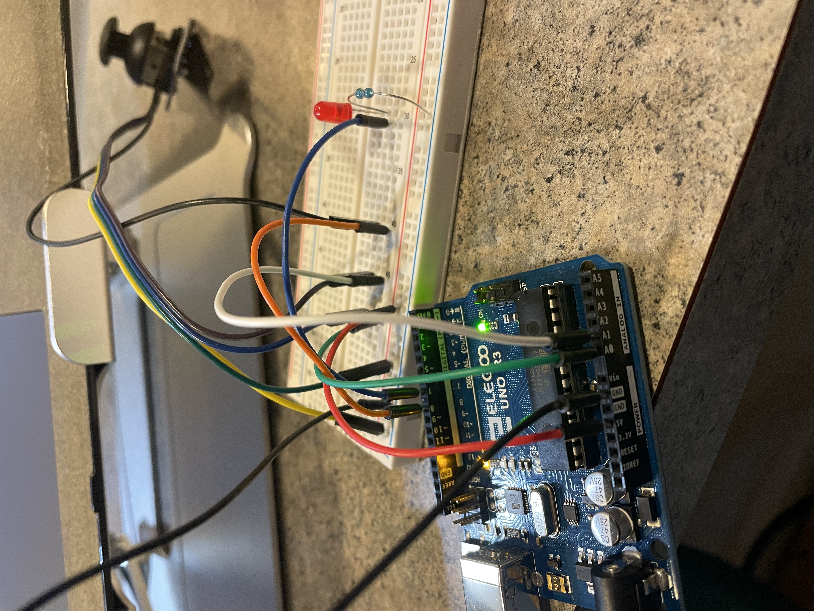
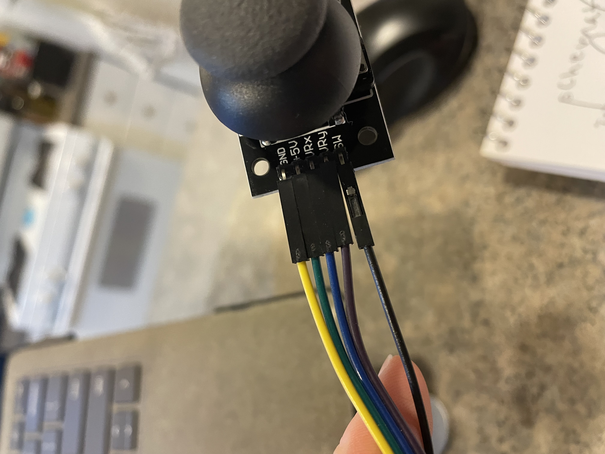
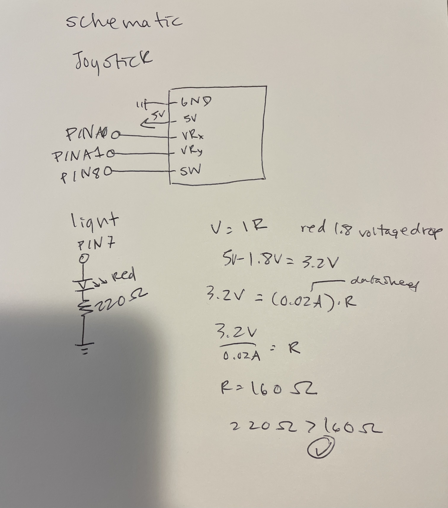
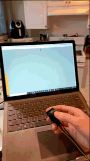

Final Project



Above is the circuit that contains the LED and joystick, the joystick is connected to ground, 5V power, A0 for X input, A1 for Y input, and Pin 8. The LED is connected to ground and PIN 7 through a 220 ohm resistor.

Above is the calculations for the resistor used, and schematic of the circuit.
Arduino Code
/*
*
* The array/noise accomodating code was sourced from here:
* Tutorial page: https://arduinogetstarted.com/tutorials/arduino-ultrasonic-sensor
*/
#define TRIG_PIN 9 // TRIG pin
#define ECHO_PIN 8 // ECHO pin
float filterArray[20]; // array to store data samples from sensor
float distance; // store the distance from sensor
//minimum sensor distance in cm
int sensorMin = 5;
//max sensor distance in cm
int sensorMax = 30;
int ledPin = 11;
boolean onoff = false;
void setup() {
// begin serial port
Serial.begin (9600);
// configure the trigger and echo pins to output mode
pinMode(TRIG_PIN, OUTPUT);
pinMode(ECHO_PIN, INPUT);
}
void loop() {
// take multiple measurements and store in an array
for (int sample = 0; sample < 20; sample++) {
//get samples using the float method
filterArray[sample] = ultrasonicMeasure();
//wait -- to avoid interferance
delay(30);
}
// put array in ascending order
for (int i = 0; i < 19; i++) {
for (int j = i + 1; j < 20; j++) {
if (filterArray[i] > filterArray[j]) {
float swap = filterArray[i];
filterArray[i] = filterArray[j];
filterArray[j] = swap;
}
}
}
// 3. FILTERING NOISE
// + the five smallest samples are considered as noise -> ignore it
// + the five biggest samples are considered as noise -> ignore it
// ----------------------------------------------------------------
// => get average of the 10 middle samples (from 5th to 14th)
double sum = 0;
for (int sample = 5; sample < 15; sample++) {
sum += filterArray[sample];
}
distance = sum / 10;
// print the value to Serial Monitor
Serial.print("distance: ");
Serial.print(distance);
Serial.println(" cm");
//if the lamp is in starting position of false(is off) and hand within 5 cm
if (!onoff && distance < sensorMin) {
// fade the LED using the calibrated value:
analogWrite(ledPin, 50);
//wait 5 sec
delay(5000);
//indicate lamp is on
onoff = true;
//if the lamp is on (onoff is true) and hand within 5 cm , turn lamp off
} else if (onoff && distance < sensorMin) {
//turn lamp off
analogWrite(ledPin, 0);
//set onoff to false, indicating lamp is off
onoff = false;
//wait 5 sec
delay(5000);
//if lamp is on and the distance is within range, map the distance value to the
//brightness
} else if (onoff && distance <= sensorMax && distance >= sensorMin) {
//create value for light that maps to distance measurement
int sensorValue = map(distance, sensorMin, sensorMax, 0, 255);
//change brightness
analogWrite(ledPin, sensorValue);
//wait 2 seconds
delay(2000);
}
}
//method to use get distance measurements to be put in the array above
float ultrasonicMeasure() {
// generate 10-microsecond pulse to TRIG pin
digitalWrite(TRIG_PIN, HIGH);
delayMicroseconds(10);
digitalWrite(TRIG_PIN, LOW);
// measure duration of pulse from ECHO pin
float duration_us = pulseIn(ECHO_PIN, HIGH);
// calculate the distance
float distance_cm = 0.017 * duration_us;
return distance_cm;
}
Final Functionality
Below is the final operation, the joystick position affects the height and color of the webpage.

Below is the final operation, the LED turned on and off by spacebar and "c" key.